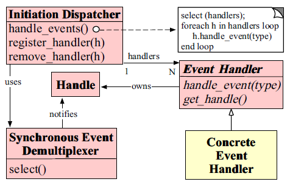

看了这个系列做的整理http://blog.csdn.net/voidccc/article/details/8719752
1.最简单的epoll处理
1 | 使用epoll的三个函数 |
2.Reactor

多了3个类，一个是事件分发器类，一个IO复用类，一个事件处理类。
1）Channel类：每个Channel对象自始至终只负责一个文件描述符的IO事件分发
以前是用epoll_wait获得事件后，直接就进行了事件处理；
现在通过添加Channel，程序终于可以将事件处理程序写在一个单独的函数中，然后将这个函数注册到Channel上。（注册–回调）
1 | vector<Channel*> channels; |
1 | 1.注册 |
现在只有两种事件，接受新连接和读写数据，之前epoll是放在一起处理了。
现在加入了Acceptor和TcpConnection，终于可以将事件分配到独立的类处理了
这也是应该的，因为接受连接和读写数据根本就是两种性质的事件，处理方式也完全不同，理应放到两个不同的类中。
2）Acceptor类：accept到连接就交给TcpServer创建
3）TcpConnection类：由TcpServer所创建，然后开始读写数据
4）EvenLoop类和Epoll类：
1 先来看EventLoop，根据名字可以猜测这个类的作用是事件循环，其实这个类就是用来包装for循环的，也就是那个套在epoll_wait外面的for循环，这个for循环可以说是整个程序最核心的部分，for循环等待在epoll_wait上，然后遍历返回的每个事件，先通知到Channel，然后由Channel通知到最终的事件处理程序（位于Acceptor和TcpConnection中）。在上一个版本中。for循环位于TcpServer里，现在我们把它移动到EventLoop的loop方法里，用while代替for，作用跟之前的for循环一样：等待在epoll_wait上，当有事件发生时，回调Channel。当然，EventLoop::loop()不是直接调用epoll_wait，而是使用了其包装类Epoll。
2 Epoll类的作用是包装epoll文件描述符，它最重要的成员变量是一个epoll文件描述符，最重要的两个方法是poll和update。poll方法包装了epoll_wait，在epoll描述符上等待事件的发生，当有事件发生后将新建的Channel填充到vector中，update方法包装了epoll_ctl，用来在epoll文件描述符上添加/修改/删除事件。update接收一个Channel作为参数，通过这个Channel可以获得要注册的事件(Channel::getEvents()方法)。以后所有涉及epoll描述符的操作都通过Epoll的这两个方法来完成。EventLoop本来是应该包括一个epoll描述符的，loop方法通过一个循环来调用epoll_wait，而现在epoll描述符在Epoll中，所以EventLoop只需要包含一个Epoll成员变量即可。EventLoop在循环中只需要调用Epoll::poll()方法就可以获得Channel列表，不需要直接调用epoll_wait了。
3 Epoll和EventLoop应该是一一对应的关系，每个EventLoop有且只有一个Epoll。 在原始的muduo中，为了兼顾epoll/poll编程，作者为IO复用写了公共父类Poller，这里我进行了简化，直接实现了一个epoll的包装类Epoll而忽率了poll。
1 | void EventLoop::loop() |
1 | void Epoll::poll(vector<Channel*>* pChannels) |
3.缓冲区
1） 输出缓冲区的实现：TcpConnection添加了一个代表发送缓冲区的成员变量_outBuf。用户将100k数据通过TcpConnection::send送给网络库，网络库先检查输出缓冲区是否为空(_outBuf->empty())，如果为空说明现在没有等待发送的数据，就直接将这100k数据送给write系统调用，看下操作系统能接受多少，然后将剩余的没发送玩的数据添加到输出缓冲区的尾部。如果发送缓冲区不为空，说明之前已经堆积了一些数据则本次操作就不尝试write了，直接将100k数据附加在发送缓冲区后。注意在将数据加入发送缓冲区后会将EPOLLOUT事件注册到epoll文件描述符(98行)。只有这样才能接到epoll文件描述符的通知来继续发送剩余的数据。当操作系统发现自己的缓冲区有更多可用空间时，通过epoll_wait返回来告知网络库，可以继续发了，这时Channel::handleWrite被触发，Channel::handleWrite会调用到TcpConnection::handleWrite，后者将剩余的数据通过write继续发送，并且在全部数据发送完毕后取消关注EPOLLOUT事件(76行)。取消关注EPOLLOUT非常关键，如果没有这一步，epoll_wait将在每次调用epoll_wait()时都立刻返回EPOLLOUT，因为每当操作系统有更多的发送缓冲区可以被填满时都会通知网络库，而网络库因为没有更多要发送的数据送给操作系统导致其无休止的通知。
3） 输入缓冲区的实现：TcpConnection添加了一个代表接收缓冲区的成员变量_inBuf，在每次handleRead()回调被调用时，使用read系统调用将数据读出来然后追加到输入缓冲区中，并通知用户。
1 | void TcpConnection::send(const string& message){ |
4.定时事件
两种思路
1 | 思路A |
1 | 思路B |
5.多线程
上面是个基础框架，单线程的，虽然已经能够hold住小部分并发（这个具体量级需要测试），但是现代计算机都不会是简单的单核计算机，就跑一个线程，多少有点浪费，我8核的Ubuntu，你不要看不起我，所以要上多线程。
多线程具体怎么上呢，网上也有很多文章介绍，比如这篇博客都介绍了http://blog.csdn.net/yusiguyuan/article/details/17591613
总结起来就是3种比较高效，推荐第3种。
1.reactor + thread pool（能适应密集计算）
2.multiple reactors（能适应更大的突发I/O）
3.multiple reactors + thread pool（one loop per thread + threadpool）（突发I/O与密集计算），subReactor可以有多个，但threadpool只有一个。